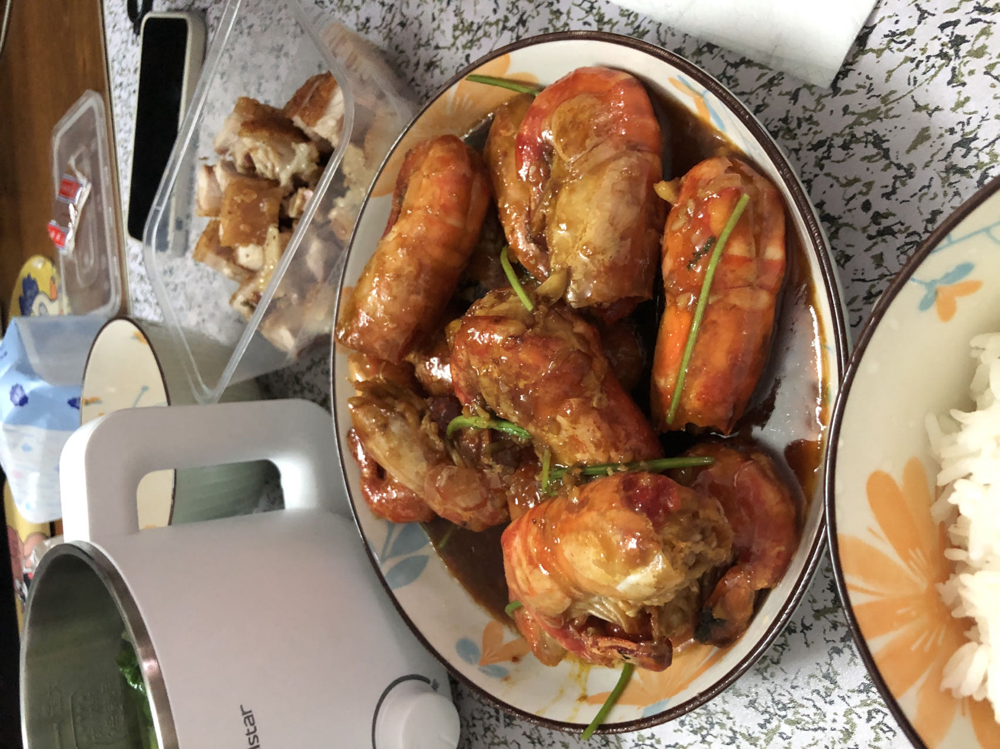

芥末黄油罗氏虾的做法
 这是一道做法简单，味道美味，具有新意的海鲜菜。
预估烹饪难度：★★★
必备原料和工具
- 罗氏虾
- 黄油
- 芥末
- 白糖
- 生抽
- 蚝油
- 盐
- 料酒、朗姆酒或啤酒
- 香菜
- 蒜
计算
按照 1 盘的份量：
- 罗氏虾 1 斤多 广东市场价大概 40~45 一斤
- 黄油 约 20g
- 芥末 15g
- 白糖 3g
- 生抽 30g
- 蚝油 30g
- 盐 3g
- 料酒、朗姆酒或啤酒 15g 到 30g
- 香菜 5 条 切段
- 蒜 5 颗 剁成蒜蓉
操作
- 将罗氏虾剪掉头尾尖刺、触须和脚，剪刀把虾身开背，去除虾线。
- 提前搅拌好芥末酱汁：酱油、蚝油、芥末、盐、糖，搅拌均匀！
- 洗好香菜，切段备用。
- 罗氏虾沥掉水，锅中加入油，直接放入罗氏虾，中火，外表煎至金黄，捞出。
- 下入蒜蓉，大火，利用煎虾剩下的油继续煎炒蒜蓉，等到锅中白雾冒出，蒜蓉已经煎出香味，下虾和黄油，让虾充分吸收黄油香味
- 下入调好的酱汁，继续大火煮沸，翻炒虾，至酱汁收汁，加入酒（料酒、啤酒可以放 30g，朗姆酒味道浓郁放 15g 即可。）
- 在等酱汁稍微收汁，加入香菜翻炒两下，即可出锅。
附加内容
- 酱汁提前调配好，黄油提前备好，防止中间备料耗时。
- 蒜蓉切记要等虾煎好后捞出再下，防止煎炒过久变黑，发苦。
- 如果不太能接受芥末就放少点，能接受就放多点，如果放多了，煮久一会儿，芥末味也会散去。
如果您遵循本指南的制作流程而发现有问题或可以改进的流程，请提出 Issue 或 Pull request 。